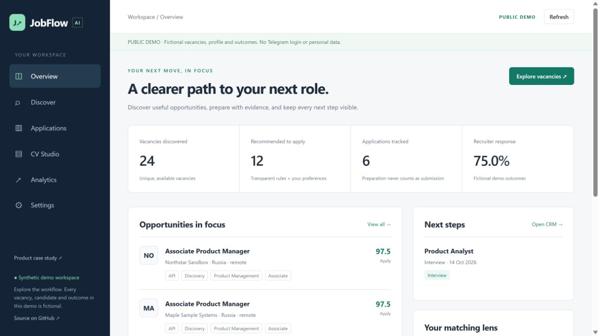

Поиск работы.
С ориентиром.
От разрозненных постов в Telegram — к понятному следующему шагу.
JobFlow AI объединяет поиск вакансий, объяснимое сопоставление с резюме и подготовку откликов в локальном рабочем пространстве.
В публичном демо вакансии, профили и результаты вымышлены.
- Найти
- Сопоставить
- Подготовить
- Проверить
- Откликнуться
- Отследить
Одно пространство. Следующий шаг перед глазами.

Объяснить совпадение.
Показывать подтверждённые факты, пробелы и неизвестное.
Проверить перед откликом.
Подготовка письма и отправка — отдельные действия.
Хранить реальный поиск локально.
Публичное демо работает только с вымышленными данными.
От личной потребности — к проверяемой системе.
У поиска работы есть невидимая стоимость координации.
Кандидат проверяет сообщества, читает неоднородные вакансии, сравнивает требования с резюме, адаптирует письмо и вспоминает, кому уже отправил отклик. Сведения и решения распадаются на отдельные инструменты.
Отправной точкой стал личный сценарий поиска Альбины. Целевая аудитория — специалисты начального и среднего уровня в продукте, аналитике, бизнес-анализе и UX. Это продуктовая гипотеза: интервью и измеренная экономия времени в проекте не заявлены.
Не просто найти вакансию. Понять, что делать дальше.
Пользователь выбирает доступные источники, проверяет извлечённые требования и объяснение совпадения, сохраняет вакансию, выбирает версию резюме и готовит черновик. Затем самостоятельно отправляет отклик на исходной площадке и подтверждает отправку в CRM.
Статус Applied появляется после подтверждения, а не после генерации письма. История хранит переходы между этапами, использованные версии документов, даты интервью и последующих действий.
Разделить факты, пробелы и неизвестное.
Парсер сохраняет оригинальный текст и ссылку на источник. Отсутствующая зарплата или разрешение на работу остаются неизвестными. Балл совпадения отражает выбранные критерии, а не вероятность найма.
Подтверждённые навыки связаны с цитатами из резюме. Предположения требуют одобрения. Письма используют утверждённые факты; свободные утверждения модели не становятся опытом кандидата. Редактирование письма требует новой проверки.
Реальный поиск — локально. Публичный кейс — отдельно.
FastAPI, SQLite и официальный клиент Telethon соединяют источники, сообщения, вакансии, версии резюме, письма и события CRM. Загрузка продолжается с сохранённой позиции; правки и доступность источников можно проверить.
Публичная сборка создаётся из явного вымышленного набора и списка разрешённых файлов. Она не читает private/ и не подключается к Telegram. Базовый режим работает без LLM; необязательный Ollama запускается локально.
Сначала надёжность и контроль. Затем расширение.
Локальное хранение уменьшает объём личных данных, передаваемых внешним сервисам. Объяснимое сопоставление позволяет исправить критерии и увидеть ограничения. Подготовка отклика отделена от действия с реальными последствиями.
Продукт учитывает неоднозначные публикации и ручные исправления. Аналитика строится по записанным событиям: пропущенные этапы не добавляются задним числом, а вакансии без оценки не считаются нерелевантными.
Работающий прототип с конкретными границами.
В опубликованном отчёте от 11 октября 2026 года зафиксированы 56 локальных автоматических проверок, включая совпадение правил публичного и локального скоринга. Браузерные проверки охватили поиск, CRM, редактирование фактических писем, импорт DOCX и адаптивную навигацию.
Работа с реальным Telegram под авторизацией владельца ещё не подтверждена. Конверсия в интервью, экономия времени и качество найма требуют отдельного наблюдения. Открыть отчёт о проверках ↗
Продуктовая задача превращена в понятный рабочий процесс.
Альбина определила проблему, целевые роли и рынки, требования к приватности и последовательность работы с откликом. Разработка выполнена с инженерной помощью AI. Кейс показывает перевод требований в архитектуру, работу с данными и проектирование контролируемой автоматизации.
Следующий шаг — подключить источники с личной авторизацией, проверить извлечение на ограниченной размеченной выборке и измерять время поиска и задержку до отклика. Расширять систему стоит по наблюдаемым ошибкам и потребностям.